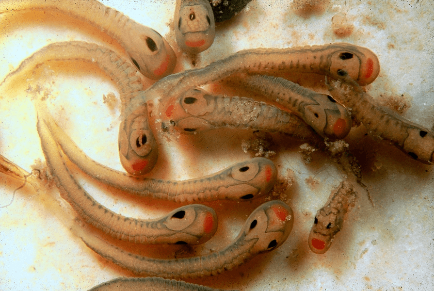
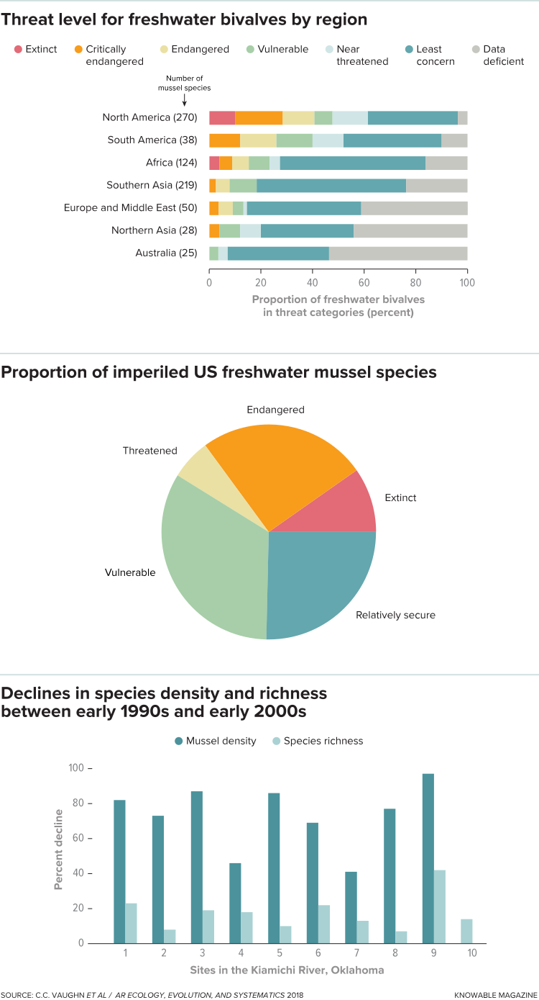
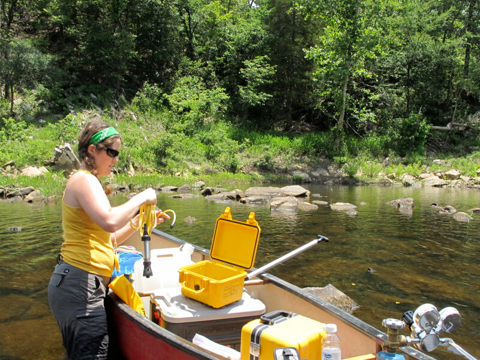
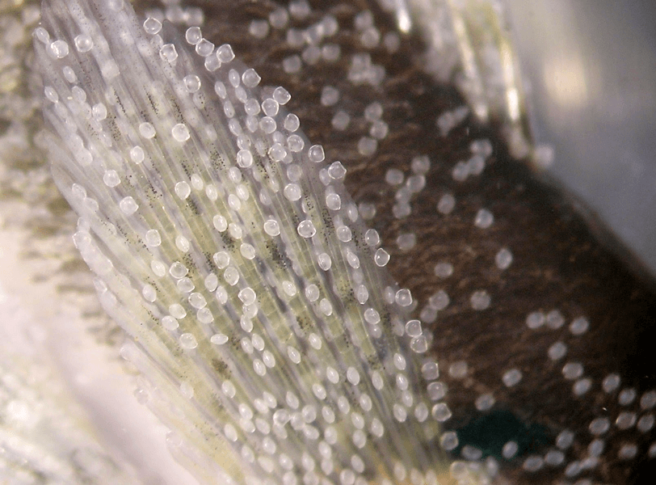
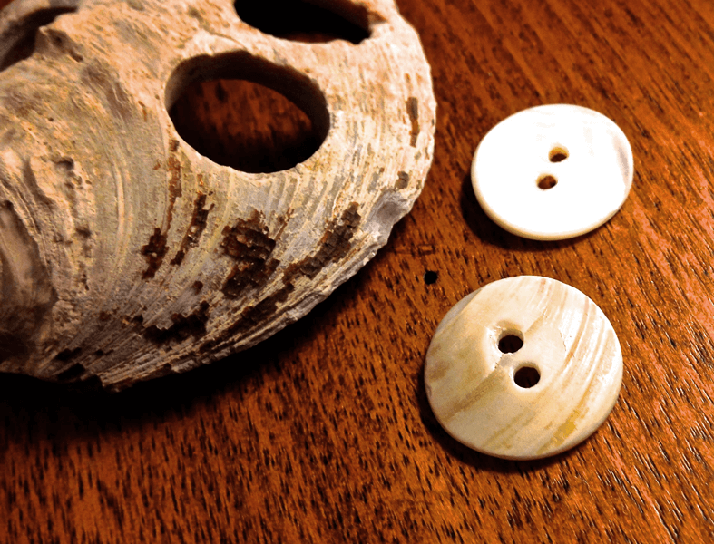

他们的大部分时间都埋在河床中，淡水贻贝很容易被遗漏。你可以在没有注意到的情况下趟过密集的床。一个敏锐的潜行者可能会在河底看到散落的贝壳和成对的洞，生物的虹吸管刺穿沉积物。
然而，即使它们被淹没，淡水贻贝也会塑造生态系统。
它们向下输送食物，为河床提供生命，为其他物种提供澄清水。它们有助于减轻营养物质污染，这是一个导致某些水域死区的普遍问题。
今天他们遇到了麻烦，这是地球上灭绝率和灭绝率最高的国家之一。仅在北美，上个世纪就有30种淡水贻贝物种灭绝，65％的幸存者被认为是濒临灭绝，受到威胁或易受伤害的 - 主要是由于大规模的河流筑坝。
从20世纪20年代到80年代，大坝的建设突然摧毁了数千英里的栖息地并且更加分散。肯塔基州鱼类和野生动物部门的渔业研究生物学家Wendell Haag表示，适应浅水，自由流动的水域，贻贝无法在主要水坝在下游数十英里处产生的深，冷和缺氧环境中生存。资源软体动物保护中心。
现在，一群生物学家有一个双管齐下的计划，将贻贝从边缘拉回来。 他们正致力于通过宣传他们提供的水净化服务来建立贻贝的公关。 他们的目标是让这些生物通过大量饲养然后将它们释放到野外来开垦水域。
在这样做的过程中，科学家正在转变传统的保护措施：不是保护栖息地以拯救受威胁的生物，而是使用贻贝来拯救他们自己的栖息地。 “贻贝是生物过滤器，”俄克拉荷马大学的生态学家Caryn Vaughn说，他合着一篇关于这些生物在2018年生态学，进化和系统学年度评论中的生态作用的文章。 “如果我们能说服人们重要，那么我认为这是拯救他们的工具。”
复杂的生活，在视线之外
在健康的溪流中，贻贝生活在大床中，可容纳数千个物种，每个成年人都像棒球一样大或更大。 它们是长寿的 - 有些物种的寿命超过100年。 它们引领了华丽的繁殖生命，这些生命可能在1亿多年前开始，当时今天的贻贝的祖先进化出了一种让它的幼虫搭便车的策略。
每个雌性都会产生数以百万计的这些幼虫，称为glochidia，而许多贻贝物种会产生精致的诱饵，类似于它们特定鱼类寄主的猎物。 一旦登上鱼，glochidia就会在生物的鳃或鳍上形成囊肿，直到它们变成青少年，然后掉落并沉淀到溪流底部。 也许百万分之二的人会活到育龄期。 
与鱼类宿主的这种复杂的相互作用帮助贻贝茁壮成长并扩散密苏里州立大学的生物学家克里斯·巴恩哈特（Chris Barnhart）指出：“鱼可以在上游游泳，而贻贝则不能游泳。”他致力于研究和修复贻贝。通过乘坐鱼类，贻贝可以在上游栖息地进行殖民 - 这是一项非常强大的创新，淡水贻贝科的所有生物成员Unionidae都是采用这种策略的长期祖先的后裔。
但是大坝的扩散阻碍了鱼类的移动，切断了许多贻贝种群并终止了繁殖能力。当引水降低其本土流量时，其他人口变干，或者他们成为污水处理厂排放，工业泄漏和农场和城市营养物质大量径流造成的水污染的受害者。入侵物种威胁到其他物种（例如，非本地斑马和斑驴贻贝胜过本地贻贝，斑马贻贝大量粘附于本地贻贝）。即使保护主义者专注于拯救被列为濒危物种或濒临灭绝的物种，贻贝数量的总体下降仍在继续 - 反过来又导致整个美国和全世界淡水栖息地的退化。

试图充分利用水
当Vaughn在20世纪90年代初开始研究一条美国河流–Kiamichi时，她亲眼目睹了急剧下降。 这条河起源于俄克拉荷马州东南部的高地，是31种不同物种的大量淡水贻贝的栖息地。 她的长期研究记录了一次急剧的下降：在过去的20年中，60％的贻贝种群已经消失。
在1998年开始的严重干旱期间开始出现重大损失，并且直到2005年才开始减少。“干旱在这个地区很常见，它是周期性的，并且只要人们保持记录就一直在进行，”Vaughn说。 但是贻贝不得不面对一些新的东西：建于1982年的大坝的水管理，阻碍了一个主要的Kiamichi支流的流动。 干燥的条件变得越来越多，人们使用的水越多，提高剩余水的温度并杀死许多贻贝。

但沃恩也目睹了一些充满希望的事情。正如她和同事在Ambio杂志上报道的那样，虽然Kiamichi在干旱期间失去了大量物种，而且总体丰度也下降了，附近小河的人口保持稳定。关键是管理上的差异。在小河的大坝上，最大的水排放是在夏末和秋季，这是一年中最干旱的时期，在干旱期间保护贻贝免受浅水中的高温。换句话说，即使气候变化增加了人类对淡水的需求，开明的水管理也可以帮助维持贻贝。自然资源保护主义者现在起诉要求流量高到足以保护Kiamichi的濒危贻贝。
贻贝力量
濒临灭绝的贻贝可以提供合法的杠杆作用，但它们缺乏狼或猎鹰的直接吸引力。 “淡水贻贝与魅力物种相反，”沃恩说。 “人们看不到它，也不知道它在做什么。”
但实际上，成年贻贝是硬壳内的强力，耐用和高效的水过滤器。它可以每天过滤多达10加仑的水，去除藻类和有机物质，将水从混浊变为清澈，使底栖植物获得更多光照。
它从过滤的材料中建立自己的组织，锁定氮，磷和碳几十年。它将废物沉积在河床上，为底栖藻类，昆虫和其他无脊椎动物提供营养，而这些营养物又为鱼类提供食物。
在PeerJ杂志上发表的对密西西比河上游的一项研究发现，那里相对健康的贻贝种群每天过滤掉140多亿加仑的水，去除了大量的生物量，并在沉积物表面沉积了大量的碳和氮。将氮化合物转化为无害的硝基锗的细菌在贻贝床下茁壮成长。
发表在“环境科学与技术”杂志上的其他研究表明，加州漂浮物是加利福尼亚州和太平洋西北部的一种受威胁的贻贝，它大大降低了河水和湖泊中的粪便细菌数量。
生态学家丹尼尔·克里格（Danielle Kreeger）和她的同事在贝类研究杂志上写道，如果淡水贻贝可以恢复到以前的丰度，那么就有理由认为这些生物可以减轻营养物污染并降低饮用水过滤的成本。 “如果你的系统历史上有贻贝种群，而且不再有，那么在你恢复自然贻贝社区之前，我不相信它是健康的，”克里格说。
营养污染是对水生生态系统的普遍威胁。在集约农业中使用的污水排放和合成肥料向河流释放大量的氮和磷，引发藻类和蓝藻的有害大量繁殖。当死细胞沉到底部时，细菌消化它们，耗尽水中的氧气。在强烈的大量繁殖期间，鱼类和其他水生生物可能会窒息。

在特拉华河口非营利组织工作的克里格说，切萨皮克是北美最大的河口，是一个主要案例。那里的早期定居者记录了清澈的海水。底部沉积物拥有丰富的绿色植物，贻贝和牡蛎。但是从17世纪开始并在二十世纪加速，森林砍伐和耕作增加了营养物质沉积物进入水域的径流。贝类种群减少，切萨皮克变得混浊，沉积物和藻类大量繁殖，原生的底栖植物和动物逐渐消失。
为了限制养分流失，农民必须采用最佳管理措施或BMPs - 采取最小化肥料使用和沿排水沟种植湿地植被的策略。原生双壳类动物 - 特别是牡蛎 - 的恢复最近被批准为BMP。迄今为止的努力集中在东部牡蛎上，这是一种清除水的咸水物种，也是切萨皮克水手收获的珍贵美食。 Kreeger说，淡水贻贝可能不那么好吃，但它们有助于提高水质，就像牡蛎和更广泛的栖息地一样。
按钮交易的经验教训
但是在一个部署贻贝之前，必须学会种植贻贝。在过去的20年中，美国的几个实验室一直致力于在实验室中珩磨贻贝繁殖技术，以提高动物的恢复力度。在这样做的过程中，他们从近一个世纪前开始研究，当时淡水贻贝壳被用来制造纽扣，形成了美国主要产业的基础。
按钮业务的中心位于中西部，伊利诺伊州新波士顿附近的一个贻贝床从1894年到1897年生产了超过9,000公吨的炮弹 - 但是在1899年之前已经筋疲力尽。这只是其中一个案例中的一个。过度采伐消灭了天然贻贝床。到了1910年代，爱荷华州和密苏里州的研究人员正致力于增加贻贝的生长和繁殖，以保持按钮行业的发展。

他们留下了关于如何以及何时发现携带glochidia的雌性的信息，以及哪些鱼是当地贻贝的寄主。 “我们从阅读那些旧报纸中学到了很多东西，”巴恩哈特说。他自己的实验室发现，下一步，将幼虫贻贝附着在寄主鱼上，相对简单：从雌性中获取glochidia，保持水中的水被搅动，并添加正确的鱼。
Barnhart的团队接下来的重点是通过宿主鱼的寄生阶段获得大量的glochidia，以生产尽可能多的幼贻贝。但他们发现，大多数微观青少年都无法生存。实验室必须弄清楚如何让它们长到一英寸左右，此时“它们是防弹的，存活率很高，”巴恩哈特说。
尽管如此，即使在成功的实验室饲养之后，重建野外失去的贻贝种群也是一项复杂的任务。弗吉尼亚州的克林奇河上游污染了当地人口，是恢复工作取得成功的少数地区之一。
2005年，经过清理，研究人员尝试释放微小的幼贻贝，并携带带有glochidia的鱼，两者都没有运气。美国鱼类和野生动物管理局的修复生物学家Jess Jones说，只有当他们释放更大的幼体，在实验室培养一年或更长时间时，贻贝才能进入，并且及时显示出自然繁殖的行为迹象。在努力。将贻贝中藏有幼虫的雌性贻贝发现到沉积物表面，以显示它们对寄主鱼的诱饵。
恢复的新视角
随着恢复濒危贻贝物种的努力继续进行，并且随着科学家们更多地了解可以帮助他们的水资源管理实践，Kreeger及其同事正在推进一项计划，即使用普通的非濒危贻贝物种，在更大规模上应用这些技术。目标是部署贻贝以改善和保护水质，从而帮助恢复整个生态系统。
该项目经过多年的宣传和培育当地贻贝的工作，并将重点关注在特拉华州和切萨皮克河流域恢复其人口。 Kreeger及其同事得出结论，五个物种 - 东部椭圆形，阿拉伯式漂浮物，潮水环，东部池塘和黄色灯柱 - 将成为主要的修复候选者。它们都具有高过滤能力，历史悠久且丰富，并且在该地区仍然相对普遍。
为此，特拉华河河口伙伴关系最近与宾夕法尼亚州签署了一项协议，在费城建立一个贻贝生产孵化场。 “当孵化场建成并开启灯和水泵时，我们的目标是每年生产50万贻贝，这些贻贝将在我们的溪流和河流中持续存在，并以清洁水的形式提供投资回报，”克里格说。
开始时水必须有点干净：幼虫和幼年贻贝可能被相对较低水平的氨中毒，这是一种在污水或农业径流污染的水中常见的氮。几十年的大坝建设和污染导致了切萨皮克流域贻贝种群的急剧减少。克里格和其他人的工作表明，一些栖息地现在可以再次支持贻贝。
“在之前没有一个设施可以专注于生产大量的常见物种，”克里格说。 “因此，我们还没有真正有机会以非常重要的方式测试很多这些概念 - 你把数字放在一条河里，然后看看你是否能够根据水质进行研究。
“我们期待能够最终测试它。”